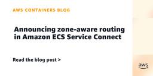
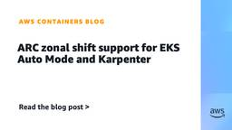
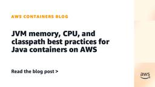

Containers
フィード

Announcing zone-aware routing in Amazon ECS Service Connect 1
1
Containers
In this post, we explain how zone-aware routing works and walk you through setting up a multi-AZ ECS cluster to see it in action.
19時間前

ARC zonal shift support for EKS Auto Mode and Karpenter
Containers
In this post, we walk through how zonal shift integrates with Amazon Elastic Kubernetes Service (Amazon EKS) and what happens when a shift is triggered. We also show how to enable it on both self-managed Karpenter and EKS Auto Mode (EKS Auto) clusters.
1日前

JVM memory, CPU, and classpath best practices for Java containers on AWS
Containers
In this post, we explain how the JVM interacts with the container runtime and the host kernel, and walk through configuration best practices that help you prevent these issues.
4日前

Accessing private Git repositories from Amazon EKS capability for Argo CD
Containers
In this post, we walk you through three main steps: First, you create an AWS CodeConnections host in your VPC with connectivity to your private Git server. Second, you establish a connection that Argo CD can use. Finally, you deploy a sample application to verify the integration. By the end, you have a secure way to deploy applications from private repositories.
11日前
Migrate Amazon EC2 to EKS Auto Mode using Kiro CLI and MCP servers
Containers
In this post, you walk through a practical migration scenario where a Node.js web application running on EC2 instances is migrated into a highly scalable, containerized service on EKS Auto Mode. You will learn how to configure and use the AWS and Amazon EKS MCP Servers with Kiro CLI to automate critical migration tasks from Dockerfile creation and image optimization to Kubernetes manifest generation and production deployment on EKS Auto Mode.
15日前
Full request and response compliance logging on Amazon EKS
Containers
In this post, we demonstrate how to use Envoy’s External Processing filter (ext_proc) to solve this challenge on Amazon EKS. This solution captures complete request and response data without modifying application code, providing the compliance-grade audit trails that regulators require.
17日前
Diagnose Kubernetes Control Plane Performance Issues with AWS DevOps Agent
Containers
This post demonstrates how AWS DevOps Agent diagnoses Amazon Elastic Kubernetes Service (Amazon EKS) API server performance degradation, specifically 429 throttling and API Priority and Fairness (APF) seat exhaustion.
22日前
Announcing Amazon EKS Rollback for safe and reliable management of cluster upgrades
Containers
Today, we’re announcing Amazon EKS Version Rollback, a new capability that allows cluster administrators to safely roll back Kubernetes version upgrades on Amazon Elastic Kubernetes Service (Amazon EKS) clusters. With this feature, you can now confidently roll out new version upgrades across your EKS fleet with an additional safety net.
23日前
Faster nodes, smarter scaling: What’s new inside Amazon Elastic Kubernetes Service (Amazon EKS) Auto Mode
Containers
In this post, we walk through the performance and scalability improvements we shipped across the four pillars of EKS Auto Mode: runtime, compute, storage, and networking.
1ヶ月前
Amazon EKS now supports control plane egress through your VPC
Containers
Today, we’re announcing customer-routed control plane egress, a new capability that you can use to route Kubernetes control plane traffic through your own Amazon Virtual Private Cloud (Amazon VPC). This includes admission webhook callbacks, OpenID Connect (OIDC) provider lookups, and aggregate API server requests. With this feature, you can apply the same VPC routing, security group, endpoint policy, and AWS Network Firewall controls that you use for your data plane to the Kubernetes API Server’s customer-controllable outbound traffic on Amazon Elastic Kubernetes Service (Amazon EKS) clusters.
1ヶ月前